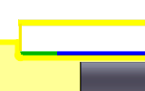

<div id="turning_exit_angle"><p>切削パスの終了時の退出動作の退出角度を指定します。この角度は最後の切削を基準にしています。</p>
<p>緑色で表示される退出。</p>
<table class="tipTable" cellspacing="10">
<tr>
<td><center></center></td>
<td><center></center></td>
<td><center></center></td>
</tr><tr>
<td><center><p><b>角度: 0 度</b></p></center></td>
<td><center><p><b>角度: 45 度</b></p></center></td>
<td><center><p><b>角度: 90 度</b></p></center></td>
</tr></table>
</div>